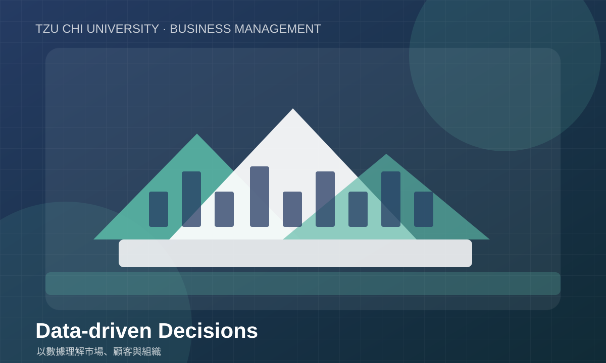
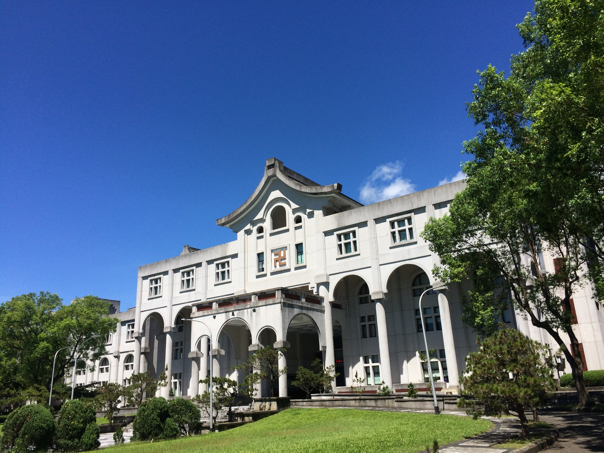
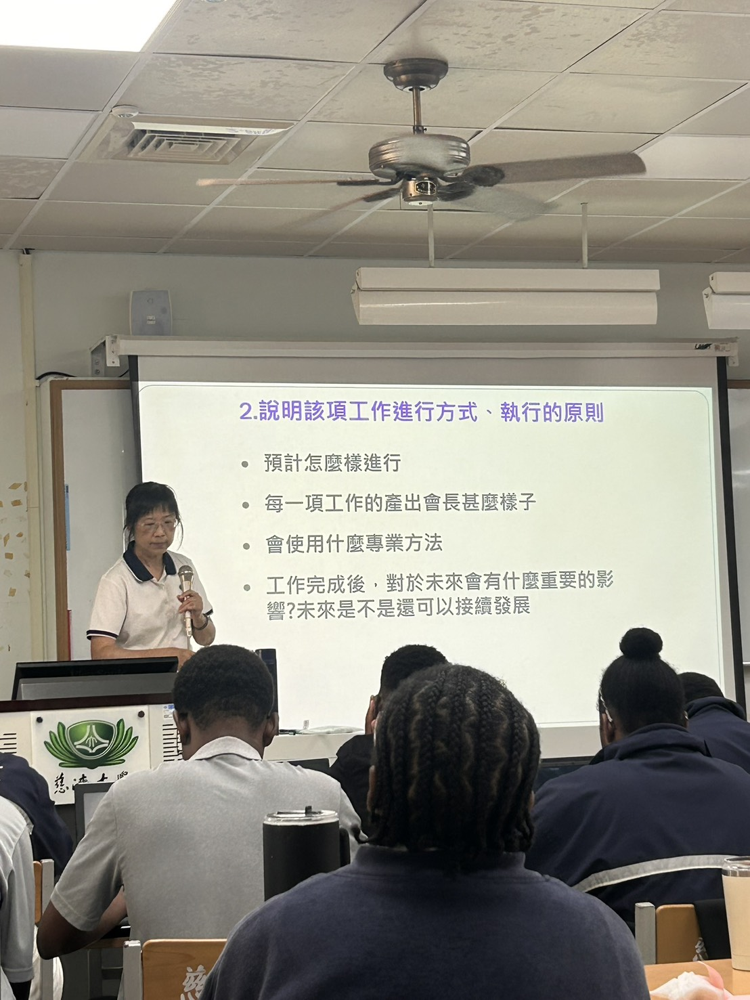
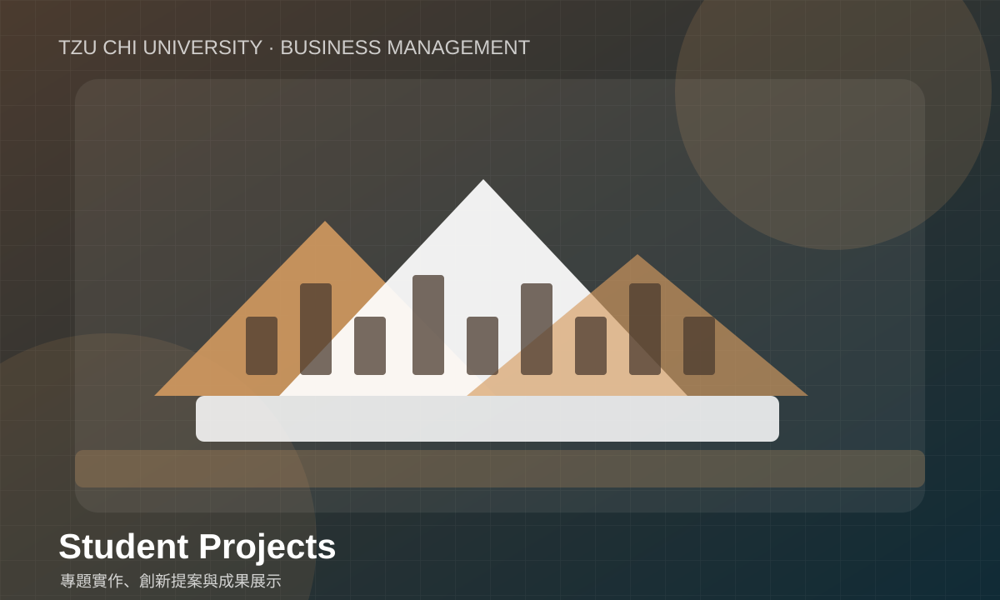
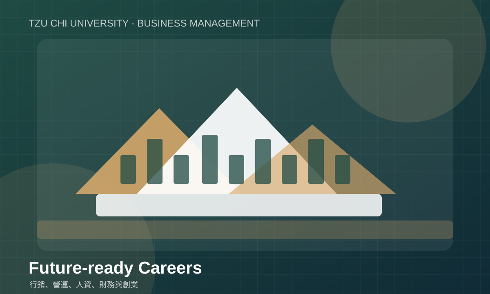
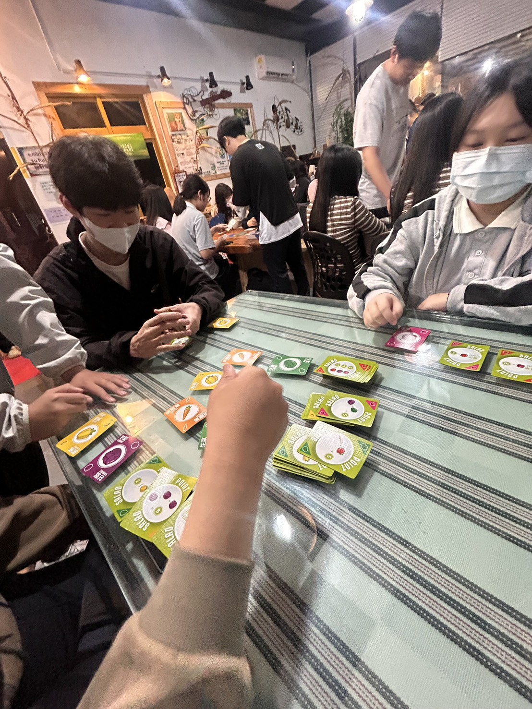

01｜分析
商業思考與數據判讀
練習從市場資訊、顧客需求與營運數據中找出問題，建立有依據的判斷，而不是只憑直覺做決定。
在快速變動的商業環境中，懂得分析問題、理解人、善用數據並付諸行動，是未來管理人才的重要能力。本系以管理專業為基礎，結合實務學習、團隊合作與人文關懷，陪伴學生探索自己的方向。

經營管理不只是學習如何經營一家企業，更是理解組織如何運作、資源如何配置、團隊如何合作，以及如何在有限條件下做出有根據的決策。
本網站以系所介紹網站為設計情境，整理管理教育常見的學習面向，讓學生、家長與有興趣的訪客能快速掌握本系的學習方向。正式發布前，請以學校與系所最新公告校對師資、課程及招生資訊。

透過不同的學習方式，培養學生面對真實情境時所需要的分析、溝通與執行能力。

練習從市場資訊、顧客需求與營運數據中找出問題，建立有依據的判斷，而不是只憑直覺做決定。

在分組報告、提案與專題中練習分工、傾聽、整合意見與時間管理，學會讓團隊一起完成目標。

將課堂概念轉化成企劃、服務改善或產品構想，從需求分析、規劃到成果呈現，完整體驗專案流程。
以下為管理學習面向的示意整理，實際開課名稱、學分與必選修規定，請依校方最新課程規劃為準。
管理學、經濟學、會計學與商業概論，建立理解組織及市場的基本語言。
行銷管理、人力資源、財務管理、作業管理與組織行為，理解企業不同部門的運作。
商業數據、數位工具、服務創新與永續管理，回應產業與社會的變化。
專題研究、個案分析、簡報提案與實務體驗，練習整合知識並提出可執行方案。

經營管理的訓練具有跨領域特性，學生可依個人興趣、能力與實習經驗，逐步探索適合自己的發展方向。
學生作品不只是最後的成果，也記錄了從發現問題、提出想法，到測試與修正的學習歷程。

正式聯絡資訊請以學校官方網站公告為準，避免使用過期的電話、信箱或辦公室資訊。
建議每學期更新招生資訊、活動照片、學生專題與最新公告，並確認圖片授權及個人肖像使用同意。